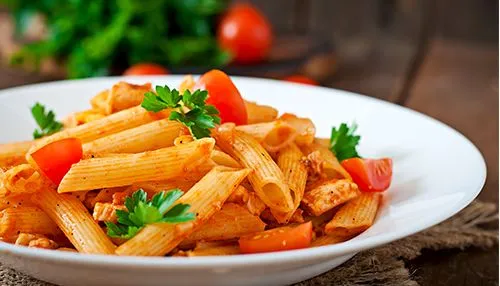
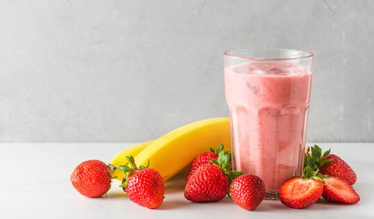
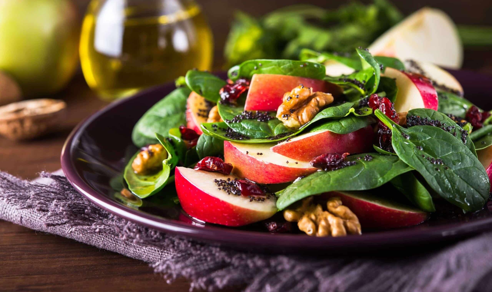
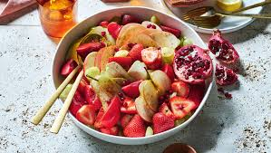

Garlic Butter Pasta
Ingredients:
- 200g spaghetti
- 2 tbsp butter
- 3 garlic cloves
- Salt & pepper
Steps:
- Boil the pasta.
- Sauté garlic in butter.
- Mix pasta with garlic butter.
- Serve hot.

Berry Banana Smoothie
Ingredients:
- 1 banana
- 1 cup mixed berries
- 1/2 cup yogurt
- Honey (optional)
Steps:
- Combine all ingredients in blender.
- Blend until smooth.
- Pour into glass and enjoy.

Healthy Salad
Ingredients:
- 1 cucumber (Chopped)
- 1 tomato(Chopped)
- 1 small onion (sliced)
- ½ lemon (for juice)
- Salt & pepper
Steps:
- Wash and chop all vegetables: cucumber, tomato, onion, and greens.
- Place in a bowl and mix them well.
- Add olive oil, lemon juice, salt, and pepper.
- Toss everything together and serve fresh.

Fruit chaat
Ingredients:
- 1 apple (diced)
- 1 banana (sliced)
- 1/2 tsp chaat masala
- 1 tsp honey (optional)
- Salt & pepper
Steps:
- Chop the fruits and place them in a mixing bowl.
- Add pomegranate seeds and gently mix the fruits together.
- prinkle chaat masala, black salt, and drizzle honey over the fruits.
- Toss everything together and garnish with fresh mint leaves.
- Serve immediately!